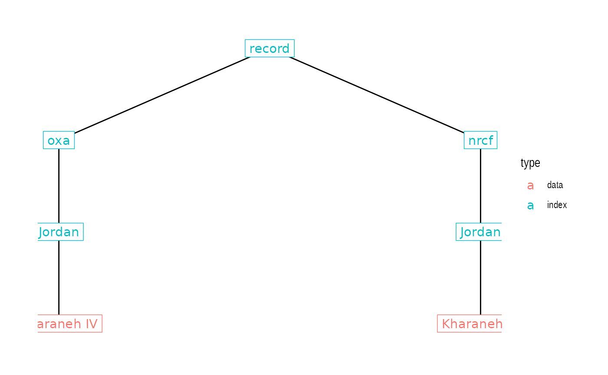

This vignette introduces low-level functions for interacting with IntChron’s API directly. In most cases, the high-level interface provided by intchron() should be sufficient; see vignette("intchron").
IntChron’s records are organised into a hierarchical tree by data source (‘host’), country, and individual data series (typically a site). For example, the canonical URLs for records from the site of Kharaneh IV (<https://intchron.org/record/oxa/Jordan/Kharaneh IV> and <https://intchron.org/record/nrcf/Jordan/Kharaneh IV>) encode their position in the tree:
#> Loading required package: ggplot2
Here we can distinguish between ‘data’ records and ‘index’ records. Data records include a data series (such as a list of radiocarbon dates) and are found at the terminal nodes of the tree. Index records are the intermediate nodes in the tree and do not contain a data series, only a list of links to other records. For example, the index record at record/oxa/Jordan (https://intchron.org/record/oxa/Jordan) has a list of all the sites from Jordan in the ORAU database.
There are other index records, such as host/oxa and record/Jordan, but these are aliases that eventually redirect to the canonical hierarchy described above.
What this means is that if you want to aggregate multiple records, whether a specific subset (e.g. records from Kharaneh IV, records from Jordan), or the whole database, you cannot rely on a single request. Instead, you need to ‘crawl’ the tree from an index node to the data nodes you’re interested in.
The intchron_crawl() function provides this functionality. Starting from a given index record, it will recursively follow all the links it finds until it reaches the ends of the tree, and return all the data records it finds there. For example, you can retrieve the entire IntChron database by crawling the whole tree from the record entry point:
# Takes a long time! everything <- intchron_crawl(intchron_url("record"))
The remaining arguments to intchron_crawl() give options for refining this search with two common objectives in mind: